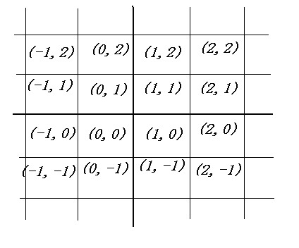

Home Page
F.A.Qs
Statistical Charts
Past Contests
Scheduled Contests
Award Contest
| Online Judge | Problem Set | Authors | Online Contests | User | ||||||
|---|---|---|---|---|---|---|---|---|---|---|
| Web Board Home Page F.A.Qs Statistical Charts | Current Contest Past Contests Scheduled Contests Award Contest | |||||||||
|
Language: The Best Farm
Description Background In a fight against invaders, farmer William get the farmers all around the country together to help the king beat the invaders. So the king decided to award farmer William a great farm after the winning of the war. Problem The king divides his country as a A*B grid and labels each 1*1 square with a pair of integers. Refer to the following picture as example:  Nevertheless, not all the squares are available. Some have been awarded to others, and some have been destroyed in the war. So the king only list the available 1*1 squares, and let farm William choose some from them. Meanwhile, William can’t choose all of the squares. He can only choose some of them, so that the squares can form a connected area, to build up his farm. A connected area is defined as following: 1. A connected area is made up of some 1*1 squares; 2. From any of these 1*1 squares, one can walk to any other 1*1 square belonged to this area without entering some square that is not in this area; 3. When standing in a square, one can walk into the adjacent squares in four directions: north, south, east, and west. In addition, every square available has a value. William should choose to build up a farm (connected area) that is the most valuable. In other words, William should choose some of the square forming a connected area, in which the sum of the value of squares is the largest. Your task in this problem is to find out the largest value. Input The input consists of several test cases. In the first line of each test case, there are one positive integers N (1<=N<=200000), indicating the number of available squares. The following N lines contain the information of the N squares, one per line. In one line, there are three integers x y v separated by one blank. (x, y) is the location of this square, and v is its value. All the x and y lie in the range of signed 16-bit integer. The value v is a nonnegative integer that is less than 10000. The test case starting with one zero is the final test case and has no output. Output For each test case, print your answer, the largest value with which William can build up his farm, in one line without any redundant spaces. Sample Input 1 0 0 1 6 0 1 1 0 0 1 1 0 1 2 2 2 2 1 2 2 -1 1 0 Sample Output 1 4 Source |
[Submit] [Go Back] [Status] [Discuss]
All Rights Reserved 2003-2013 Ying Fuchen,Xu Pengcheng,Xie Di
Any problem, Please Contact Administrator